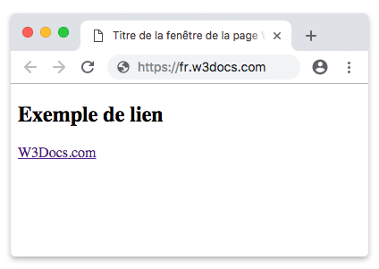

Les liens en HTML permettent de créer des hyperliens qui peuvent être utilisés pour naviguer entre différentes pages web ou pour ouvrir des documents ou des fichiers multimédias dans un navigateur web.
Pour créer un lien en HTML, vous devez utiliser la balise <a>. Vous pouvez utiliser l'attribut <href> de la balise <a> pour spécifier l'URL de la page ou du document auquel vous souhaitez que le lien pointe.
Lorsque l'utilisateur cliquera sur le lien, il sera redirigé vers la page web spécifiée dans l'attribut 'href'. Vous pouvez également utiliser l'attribut 'target' pour spécifier comment le lien doit être ouvert. Par exemple, vous pouvez utiliser 'target="_blank"' pour ouvrir le lien dans un nouvel onglet du navigateur.
Il existe d'autres attributs que vous pouvez utiliser avec la balise <a>, tels que ‘rel’, ‘title’ et ‘download’, qui permettent de fournir des informations supplémentaires sur le lien et de contrôler son comportement.